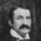

Paul Pearson Marie StJean |
John Pearson
Occupation: Taylor Mary F Plunkett Passed: April 24, 1873, Sherbrooke Buried: St-Michel? (From burial records of St. George's Anglican Church in Drummondville.) Married: July 6, 1823 St. James Anglican Cathedral Three Rivers. (Trois Rivieres?) (Father) Peter Plunkett Buried: Drummondville, Que. (Mother) Hanna Smith Bungay, Norfolk, Eng. Buried: Wickham, Que. (Brother) Joseph Plunkett Married: Marguerite McCabe 1843 (Sister) Anne Plunkett Married: Francois Lahaie July 08, 1845. St. Frederic de Drummondville. |
William James Pearson Occp. Carpenter, Cabinet Maker Born: June 21, 1830 Passed: April 7, 1919 at age 88 Burial: April 10, Richmond, Que. Sarah Louise Chartrain Born: July 30, 1835. Passed: July 16, 1909 Burial: July 19, Richmond, Que. Married: Feb. 12, 1855 St Frederick de Drummondville, Que. |
William Henry Pearson Born: March 20, 1856 Sherbrooke, Que. Passed: Nov. 9, 1916 Buried: St. Bibliane de Richmond Que. Ezilda Laroche (1st wife) Passed: July 19, 1895 Married: June 11, 1877 St. Bibliane de Richmond Que. Agnes Helen "Nellie" Coughlin (2nd wife) Married: Oct. 6, 1902 St. Bibliane de Richmond Que. (Agnes's Parents: Lawrence Coughlin, Catherine Farrel) |
Sara Helen Exilda Pearson |
William Henry Pearson |
||||
George Arthur Pearson |
||||
Marie Alice Pearson |
||||
Charles Wilfred (Fred) Joseph Pearson |
||||
Sarah Ethel Florida Pearson |
||||
Henry Albert Pearson |
||||
Marie Emma Pearson |
||||
Jacques "Jim" Frederick Pearson |
||||
Lawrence "Larry" Pearson (son with Agnes) Patrica Alberta Bonner |
Henry Pearson |
|||
Sarah "Sissy" Louise Pearson Born: December 22, 1858(1835?) Sherbrooke, Que. Passed: March 2, 1899 Buried in Richmond Charles Noel Desaulniers Passed: June 19, 1904 Married: June 3, 1878 |
Charles Louis Arthur Desaulnier Born: 1879 Richmond, Que. |
Louise Desaulniers |
||
Rita Desaulniers |
||||
Caroline Desaulniers M.S.H (Madames of Sacred Hearts) |
||||
Marie Louisa Laura Desaulnier Born: 1881 Richmond, Que. |
||||
Joseph Albert William Desaulnier Born: 1883 Richmond, Que. |
||||
Mary Alice Yvonne Desaulnier Born: 1885 Richmond, Que. |
||||
Henry Joseph Edmond Desaulnier Born: 1887 Richmond, Que. |
Mary Elizabeth "Peggy" Desaulniers (1928-1998) |
N.R |
||
Eugene Donald Desaulnier (1926-2014) |
D Desaulnier |
|||
D.O |
||||
H.U |
||||
J. Desaulnier |
||||
George Frederick Edouard Desaulnier Born: 1890 Richmond, Que. |
||||
Marie Blanche Annette Sara Desaulnier Born: 1892 Richmond, Que. |
||||
Joseph Eugene Wilfred Desaulnier Born: 1894 Richmond, Que. |
||||
Antoinette Jeanette Desaulnier Born: 1897 Richmond, Que. |
Joan Carlson (1922-2011) |
Private |
Daniel Kennedy |
|
Marie Catherine Florida Emma Desaulnier Born: Feb. 24, 1899 Richmond, Que. William Francois Duquette 2nd Marriage: Raymond Kacowski |
Robert Duquette |
|||
Mary Frances Duquette |
||||
Children? |
||||
|

George Alexander Pearson Born: Jan. 11, 1861 Sherbrooke, Que. Passed: April 12, 1935 
Mary Ann Boyden Born: Sept. 6, 1858 Nicolet, Que. Passed: 1935 Married: 1883 St. Ann's, Montreal. |
Beatrice Edith Sarah Pearson |
|||
Mary Ivy Grace Pearson |
||||
William James Henry Pearson |
||||
Albert George Pearson |
||||
Charles Anthony Pearson |
John Pearson |
Private |
Adam Pearson |
|
Kathleen Eva Lina Pearson |
||||
Francis (Frank) Leonard Pearson |
||||
Joseph John Gerald Pearson |
||||
Harold Ambrose Pearson |
James "Jim" Coady Pearson |
Lorne Pearson |
||
|
Edmund James Pearson Born: Oct. 8, 1866 Sherbrooke Passed: May 12, 1937 Sophie Gravel Born: Oct. 1861 |
Joseph Charles Edmund Pearson Florida Beausoleil |
Raymond Pearson |
Daniel Pearson |
Annie Marie Pearson |
Paul Pearson Georgette Cote |
||||
Leo Pearson Suzanne |
||||
(Sister) Patrica Pearson Sister P.CND Providence R.I |
||||
(Sister) Teresa Pearson Sister St. Bibiane S.N.J.M |
||||
Marie Alice Sophie Pearson |
||||
Bertha Mary Louisa Pearson |
||||
Joseph George Emmet Pearson |
||||
Marie Emma Mabel Pearson |
||||
Marie Celina Avelina Pearson |
||||
Percy Leonard Joseph Pearson Simone Provencher |
||||
Marie Agnes Hilda Pearson |
||||
Joseph Ernest Georges Pearson Rachel Tapin |
||||
Marie Sara Louise Stella Pearson |
||||
Emma Pearson Born: Sherbrooke, Que. Charles Auguste Larue Married: Aug. 6, 1889 |
Albert LaRue |
|||
Boy |
||||
Boy |
||||
Girl |
||||
Girl |
||||
Girl |
||||
Girl |
||||
Girl |
||||
Girl |
||||
Celina Pearson Born: March 6, 1870? Sherbrooke, Que. Passed: 1958 |
||||
Anonymous Born and Passed: Jan. 13, 1873 Richmond |
||||
Albert Patrick Pearson Born: March 17, 1874 Born: Richmond, Que. Passed: June 16, 1905 Florida Baril |
Son, died in infancy |
|||
Agnes Mary Ann Pearson Born: Aug. 9, 1876 Richmond, Que. Passed: Feb./March 27, 1937 |
||||
Peter Pearson Born:Jan. 1832 Sherbrooke. Baptism: February 01, 1832. One month old. Marie-Adeline Trudel Married: Jan. 21, 1856 Saint-Michel, Sherbrooke, Que. by Rev.Mr.Dufresne* *Found in Sherbrooke newspaper |
George (Bluesmoke) Pearson |
Fred Pearson |
||
Eddie Pearson Unmarried |
||||
Irene (Missy) Pearson Unmarried |
||||
Alfred Pearson Mary Moran Married: June 25, 1889 |
||||
Charlie Pearson |
||||
William Pearson |
||||
Mary Louise Pearson Arthur L D'Allaire Married: April 14, 1913 |
||||
Antoinette Pearson Sister Peter, C.N.D. (Congregation of Notre Dame) |
Alice Pearson
D'Allaire |
Boy |
||
Boy |
||||
Girl |
||||
Girl |
||||
Louisa Maria Pearson Born: February 24, 1833. Sherbrooke, Quebec, Canada. Passed: 1906 |
Mary Helena Read (1869-1931) |
Alexander Rupert Bedard (1900-1959) |
Irene Mildred Mary Bedard (1924-2016) |
Alexis Dunn |
Norman Joseph Rupert Bedard (1922-2012) |
LJ Bedard |
|||
Irene B Bedard (1892-1982) |
Private |
Ann Mayhew |
||
Fabiola E Bedard (1895-1978) |
Margaret Campbell (1929-2013) |
Anne McKenna |
Jessica Syer |
|
J.D |
||||
Louisa Read |
William J Jutras (1887- ) |
William Joseph Jutras (1926-1995) |
J.O |
|
John Pearson ?? |
{kind=link}
{kind=link}
{kind=link}
{kind=link}
{kind=link}
{kind=link}
{kind=link}
{kind=link}